ORIGIN STORY
As a child, the only thing I ever really did was ask questions. I took apart pens, toys, and anything else within reach, just to understand how it worked and what it was for. I was endlessly curious about how things functioned, how life worked, and I was always chasing the core truth underneath.
That instinct led me straight to computer science. The first thing I ever taught myself to do on a computer was open up an HTML page and inspect it — exploring the code and components hidden underneath. By high school I'd fallen in love with coding: the way you could break any website or program down into its smallest units, and then turn around and build something entirely new. I started making simple games, and that love of creating only grew.
But it never stayed confined to code. My curiosity spilled into everything. How do cameras work? What are the rules behind photography and filmmaking? What can I make in music — whether it's a beat or my own notes on the piano? How does life actually work, and how do different cultures live it?
The pattern was always the same: take something apart, understand each piece, put it back together — then push it one step further. What does this mean? And how could it be better?
TRAVELING EXPERIENCES
Traveling has always been a core part of my life. It has widened the way I perceive the world and pushed me to question my own way of living and understand my values more concretely. I've road-tripped through around 20 states across America and traveled to countries in Europe and Central America, and each trip has expanded my sense of what life is — and what its "meaning" might be.
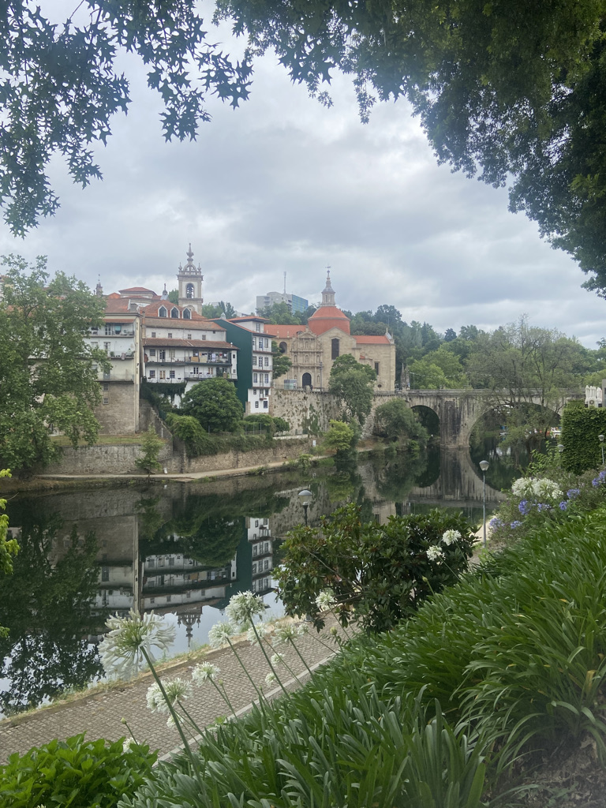
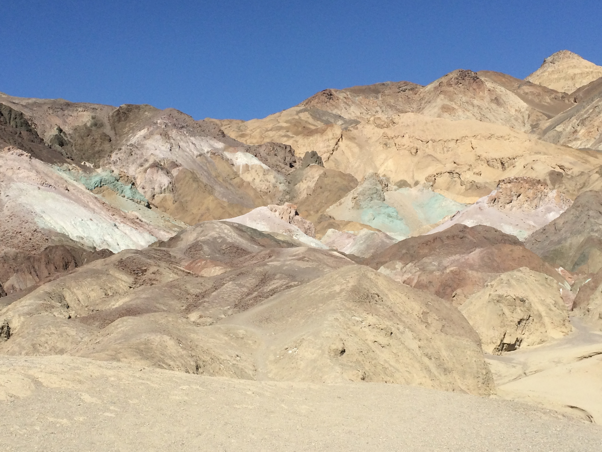
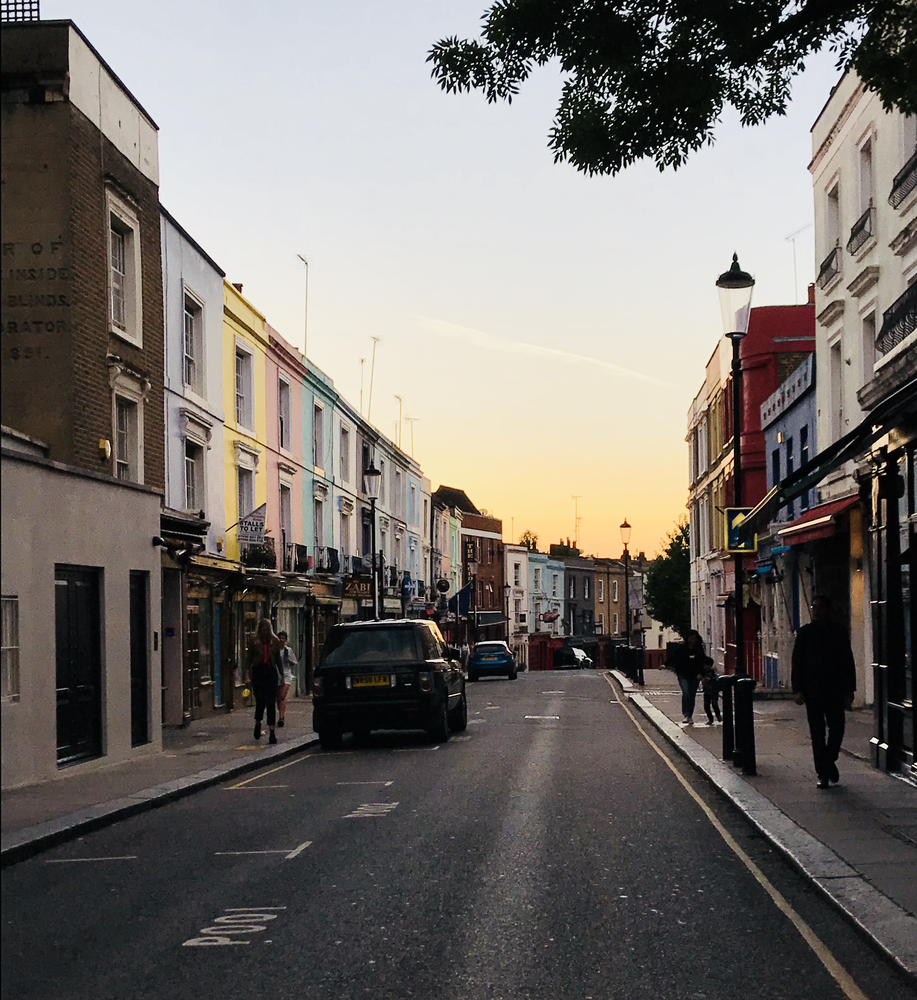
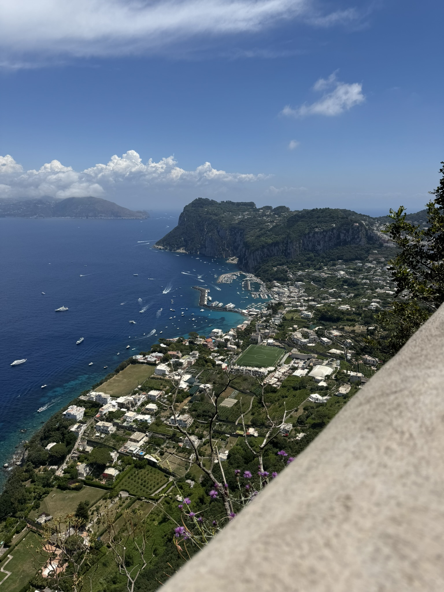
The trip I most want to talk about is my recent one to India, where I served as a Site Leader through NYU's Alternative Breaks program. We worked with several NGOs, volunteering at organizations focused on improving the lives of street children, and spent a few days in rural India working alongside a school community. This trip stood out to me deeply: I connected with my ethnic roots and found so much beauty in the simplicity, sustainability, and creativity of daily life there.
In the rural village, people conserved energy by using metal reflectors to heat their pans and cook without any gas. They reused water from around the village for irrigation. And to support local women living in poverty, the community built a clothing business that employed them and sold their work. I was inspired by how simple life was, yet how intentionally it centered on empowering children, women, and the community in a sustainable way.


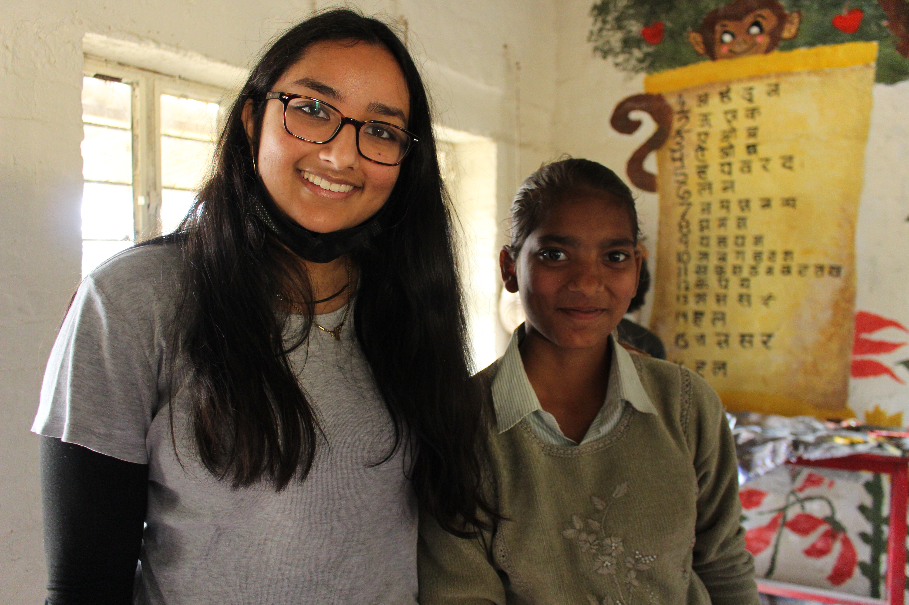
FILMMAKING & STORYTELLING
Since I was a young child, whenever I watched a movie or a TV show, the only thing I could think about was what was happening behind the camera — the positioning of the actors, the lighting, the writers at work, and how all of it gets shaped into cinema. That fascination with storytelling has stayed close to me ever since. It's become one of the main ways I connect with my friends and family day to day.
Naturally, I started creating my own things early on — parodies and music videos with my friends and sister. As I grew up, that play turned into a real focus on filmmaking and photography. I took a year-long film course in my senior year of high school and then landed a film internship that following summer. That experience showed me how much storytelling matters, not just in cinema but in life. I got to see everything that happens around the camera, and it sparked my creativity in a way nothing else had.
I've come to believe that storytelling is one of the most powerful forms of communication we have. It's shaped how I approach everyday things — how I tell a story to my friends, or how I present the work I've been doing. I don't just share information; I try to shape it into something that communicates why it matters.
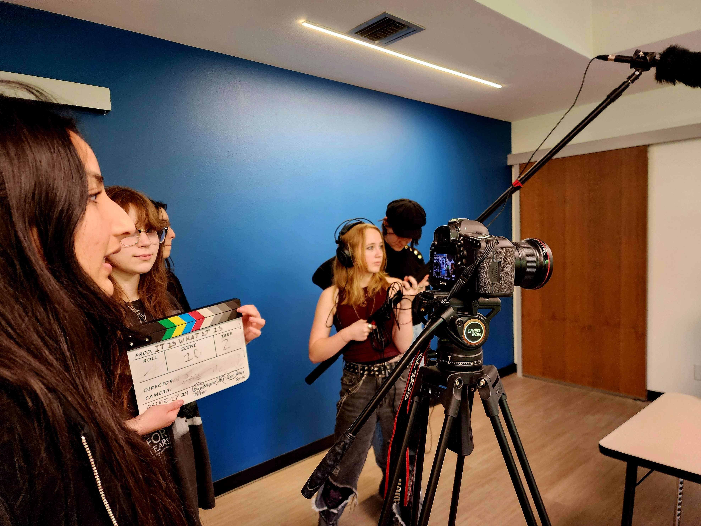
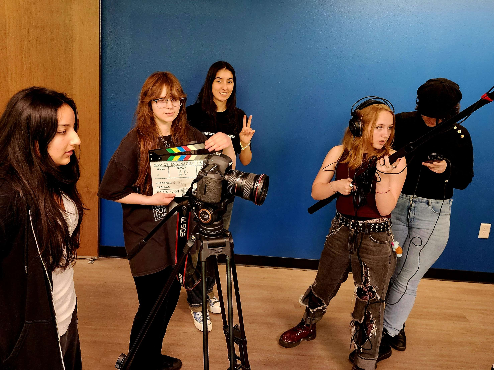
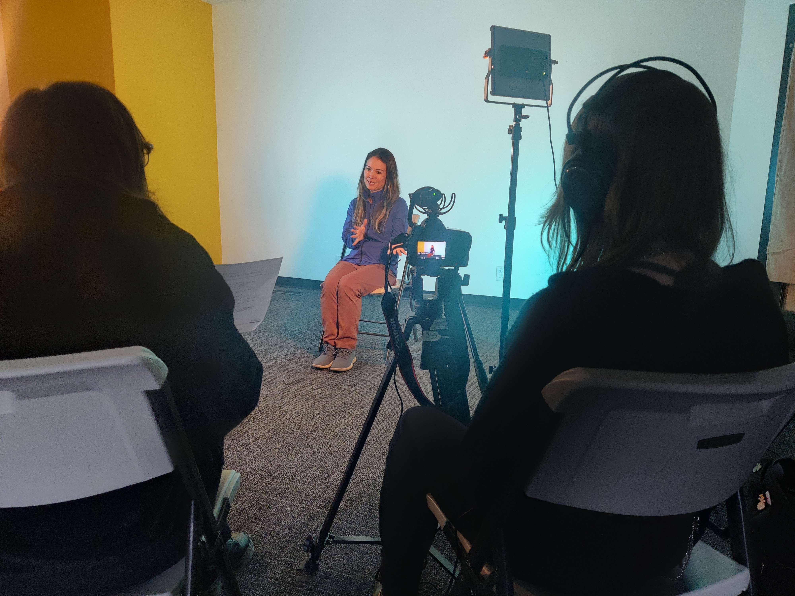
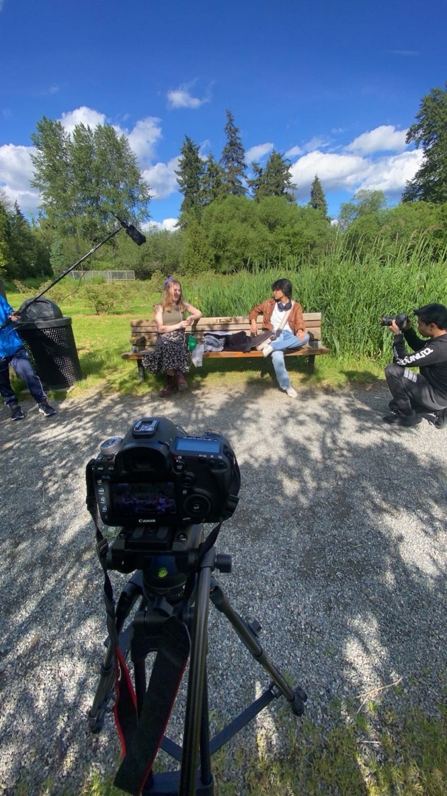
PASSION FOR MUSIC
I've played piano since I was five years old. It started with me just hitting keys, trying to find a melody, before I ever took a real lesson. That instinct to make something out of the notes never left. Over the years it turned into formal training, and I eventually earned my Collegiate Piano Diploma through the American College of Musicians (National Guild of Piano Teachers).
Piano became the way I processed things. It was how I expressed emotions I couldn't always put into words, and it kept my creativity alive in a way nothing else did. The instrument wasn't just something I played — it was somewhere I went.
Since starting college, without a piano easily within reach, I've channeled that same impulse into producing music on my computer. I've been making beats and learning how different samples and sounds can shape a feeling — how a single texture can carry an entire emotion. It's a different toolkit, but it comes from the same place: the drive to turn sound into something that means something.
THE OUTDOORS
Growing up in the Pacific Northwest, nature has always been a core part of who I am. The trails, hikes, and mountains have shaped me in important ways. For me, being outdoors has been a way to process emotions, work through my thoughts, and understand life a little more clearly. There's a kind of quiet in the PNW that lets you actually hear yourself think.
Now that I'm in NYC for college, I've traded a lot of that easy access to beautiful parks for something entirely different. The city has its own charm, and it's taught me a completely different set of life skills. My current favorite things to do are city biking and exploring its corners — finding the small parks and quiet places that most people rush past.

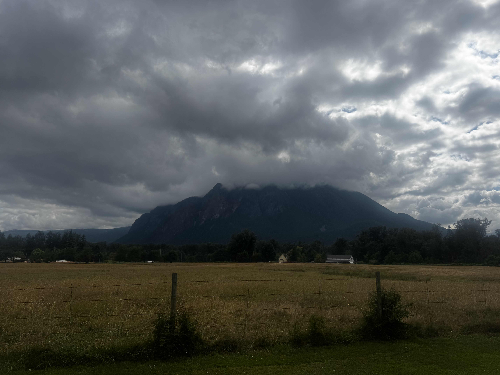


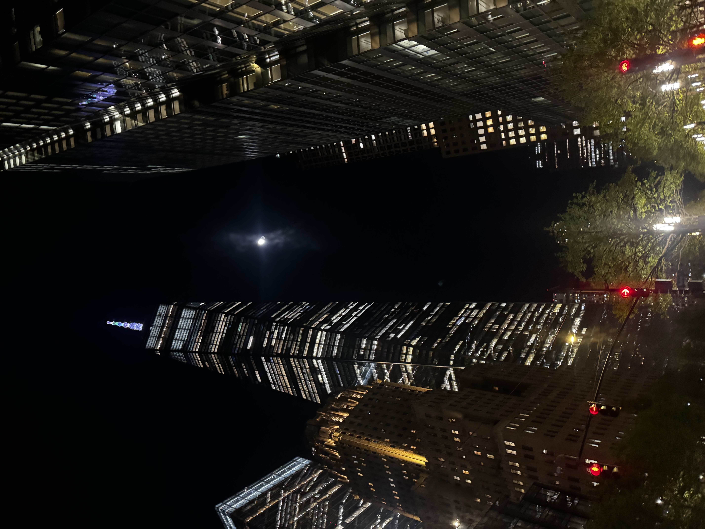

A GUIDING THOUGHT
"Life is about courage and going into the unknown."